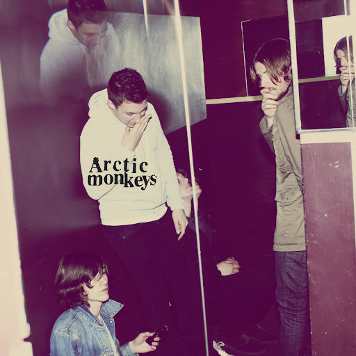

Meu top 3 álbuns do Arctic Monkeys!
Aproveitando que irão lançar música nova em breve!
N.1 - AM
Auto explanatório. Simplesmente o que os fez explodir na mainstream e a sua fama fora da Inglaterra, de onde são. Um rock clássico, com hits instantâneos e melodias acompanhadas pela impecável voz de Alex Turner, acessível a não ouvintes também. Favorita: Fireside(no momento).
N.2 - HUMBUG
Um álbum que gera opiniões mistas. De 2009, é pra mim um comprometimento e amostra da capacidade lírica de Alex Turner. Por ter um som menos acessível comparado ao AM acima (melodias "inquietantes") talvez não seja o seu mais popular em um público geral. Minha favorita é com certeza Fire and The Thud(Versão acústica.)
N.3 - TRANQUILITY BASE HOTEL & CASINO

E finalmente, a inspiração para a temática desse projetinho bobo! Mais que o humbug, TBHC causou muita surpresa entre os fãs, os Monkeys levaram seu som a uma direção completamente nova, a partir do fato que o vocalista ganhou um piano, o que fez centralizar as melodias nele. Não tão querido entre os fãs, continua estando no meu top 3, suas letras com um leve tom crítico a uma sociedade cada vez mais conectada e alienada pelo consumo excessivo de mídias, principalmente o celular. Favorita disparada: Batphone!